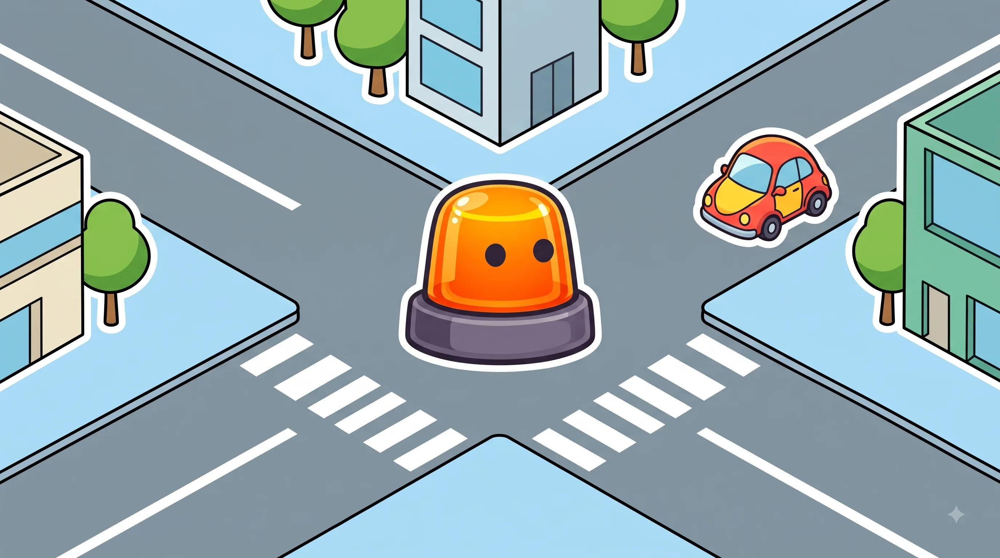
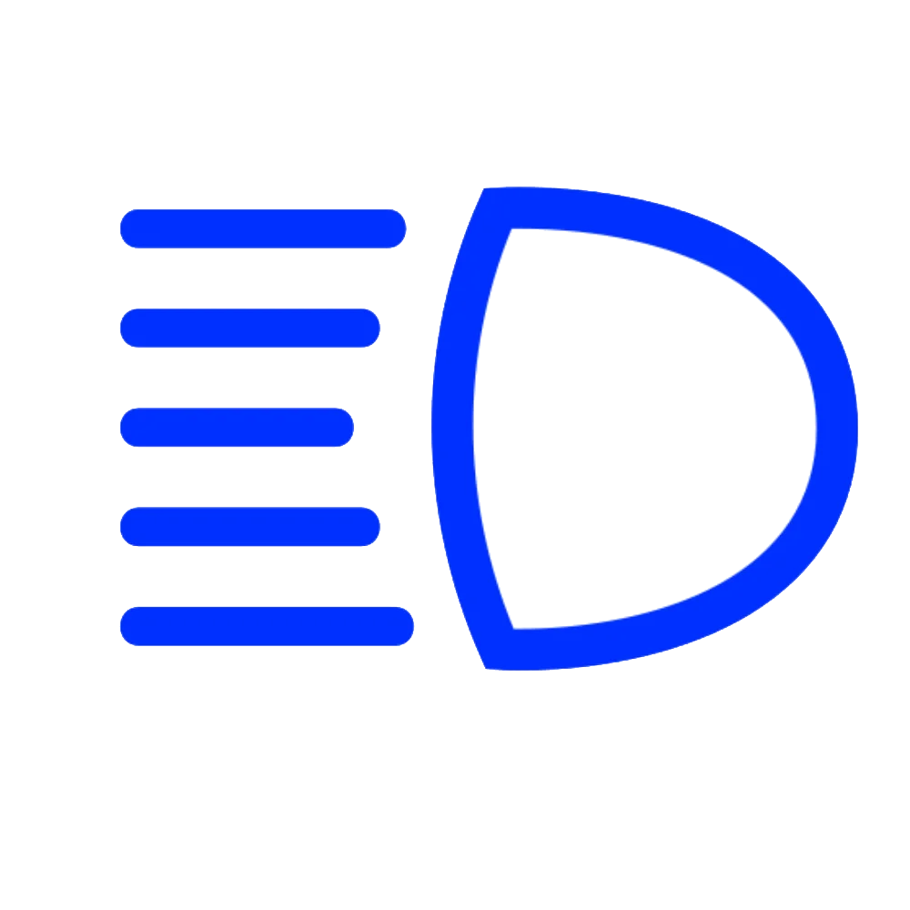
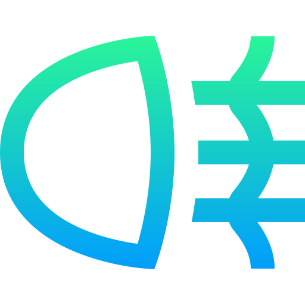
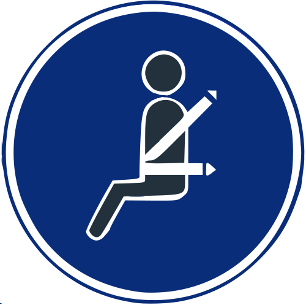
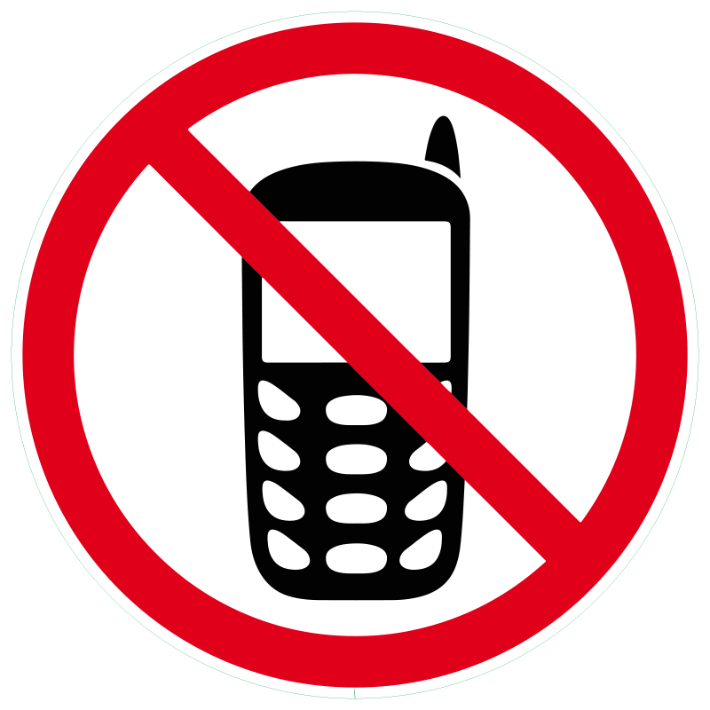
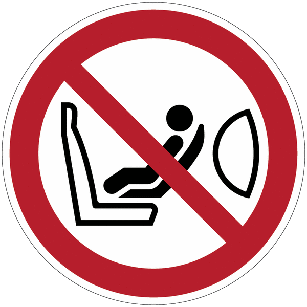
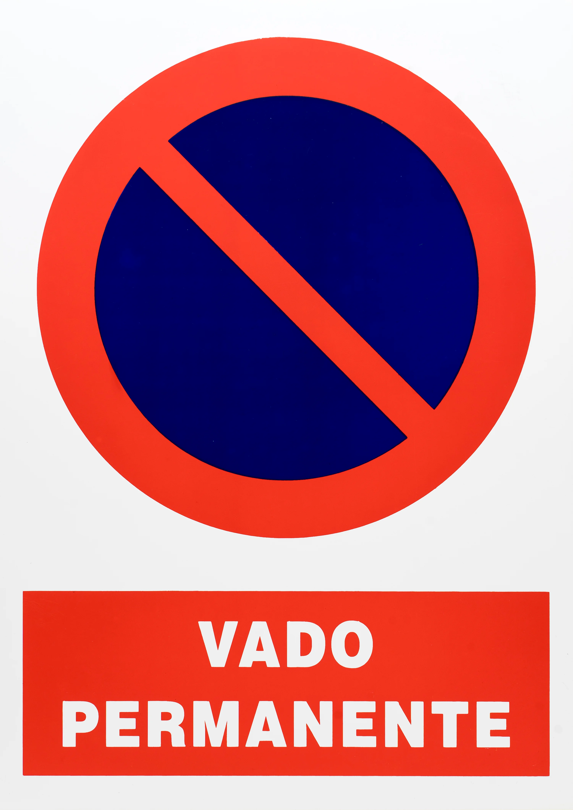
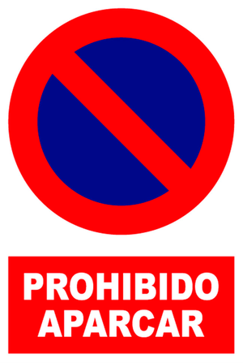
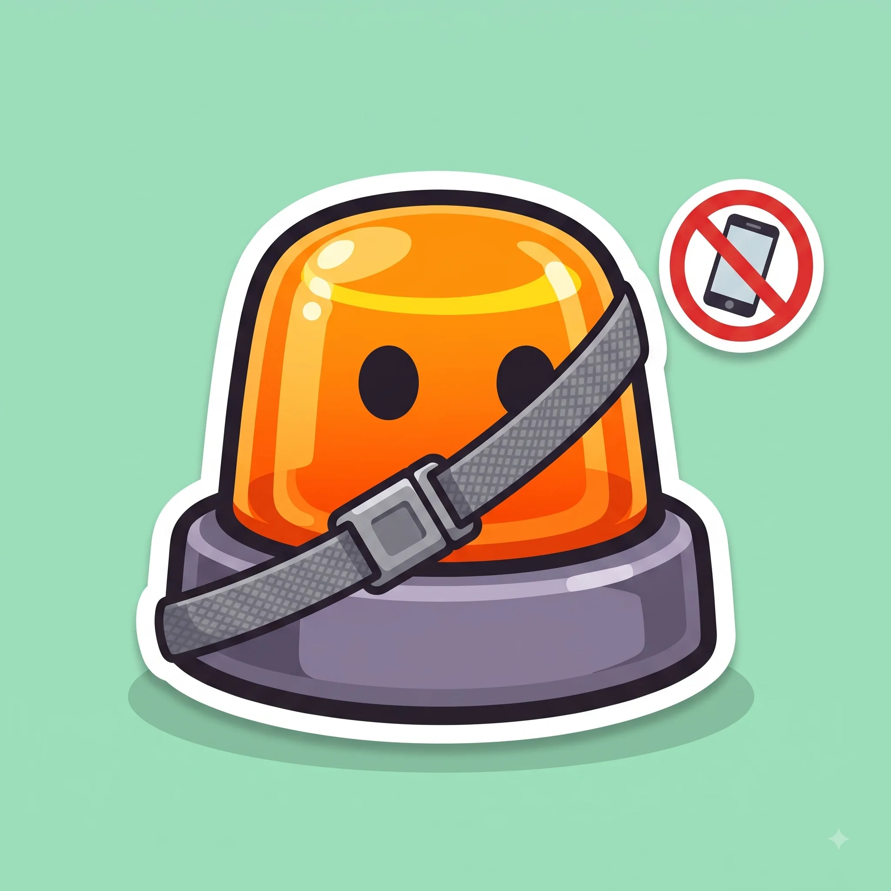

Normas generales de circulación
Las reglas base que deciden por ti cuando no hay ninguna señal.
Esquema
Cada luz tiene su momento. Usar la equivocada también sanciona.


Lo que tienes que llevar puesto o guardado antes de arrancar.



Parar es pararte un momento sin bajarte. Estacionar es dejar el coche.



Cruce sin semáforos ni señales: ¿quién pasa?
Viene por tu derecha
Tiene prioridad, cede tú
Viene por tu izquierda
Tú tienes prioridad
| Viene por tu derecha | Viene por tu izquierda | |
|---|---|---|
| ¿Quién pasa primero? | Él, tiene preferencia | Tú, él debe cederte |
| ¿Cuándo se aplica? | Solo si no hay señal ni semáforo | Solo si no hay señal ni semáforo |
| Ojo con... | Rotondas y vías ya señalizadas no siguen esta regla | Rotondas y vías ya señalizadas no siguen esta regla |
Trucos para no olvidarlo
"El de la derecha, manda."
Sin señales ni semáforos, el coche que viene por tu derecha pasa primero.
De noche, luces de cruce por defecto.
En ciudad bien iluminada puedes bajarlas; en carretera o túnel, siempre puestas.
Móvil en la mano, multa en el bolsillo.
Ni sujetarlo ni mirarlo en un semáforo: solo manos libres o coche ya estacionado.
Confusiones típicas

Ponte a prueba
Otros temas
Señales verticales
La forma y el color ya te dicen el mensaje antes de leer nada.
Velocidad y distancias de seguridad
A más velocidad, la frenada crece mucho más rápido que la reacción.
Señales horizontales y marcas viales
Líneas, flechas y símbolos pintados en el asfalto, con su propio código.
Adelantamientos
Cuándo, cómo y dónde se puede adelantar con seguridad.
Intersecciones y prioridad de paso
Quién pasa primero en cruces y glorietas.
Autopistas y autovías
Incorporaciones, carriles y normas específicas de vías rápidas.
Alcohol, drogas y fatiga
Tasas máximas y por qué te la juegas más de lo que crees.
El vehículo: mantenimiento y elementos de seguridad
Lo mínimo que debes revisar antes de coger el coche.
Accidentes: actuación y primeros auxilios
Proteger, avisar y socorrer, en ese orden.
Sanciones y puntos del carnet
Cómo funciona el sistema de puntos y qué te los quita.
Casos especiales: ciclistas, peatones, animales y meteorología
Las situaciones que no siguen la norma "de manual".